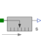

PositionSensorIdeal sensor to measure the absolute position |

|
Information
This information is part of the Modelica Standard Library maintained by the Modelica Association.
Measures the absolute position s of a flange in an ideal way and provides the result as output signals (to be further processed with blocks of the Modelica.Blocks library).
Connectors (2)
| flange |
Type: Flange_a Description: Flange to be measured (flange axis directed in to cut plane, e. g. from left to right) |
|
|---|---|---|
| s |
Type: RealOutput Description: Absolute position of flange as output signal |